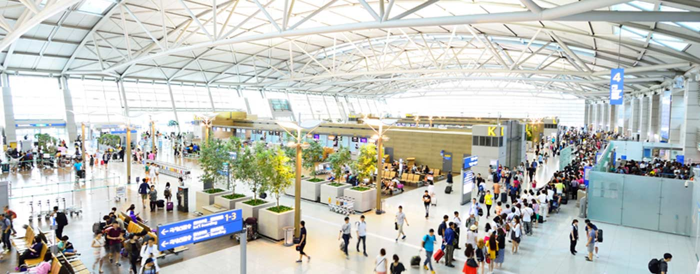
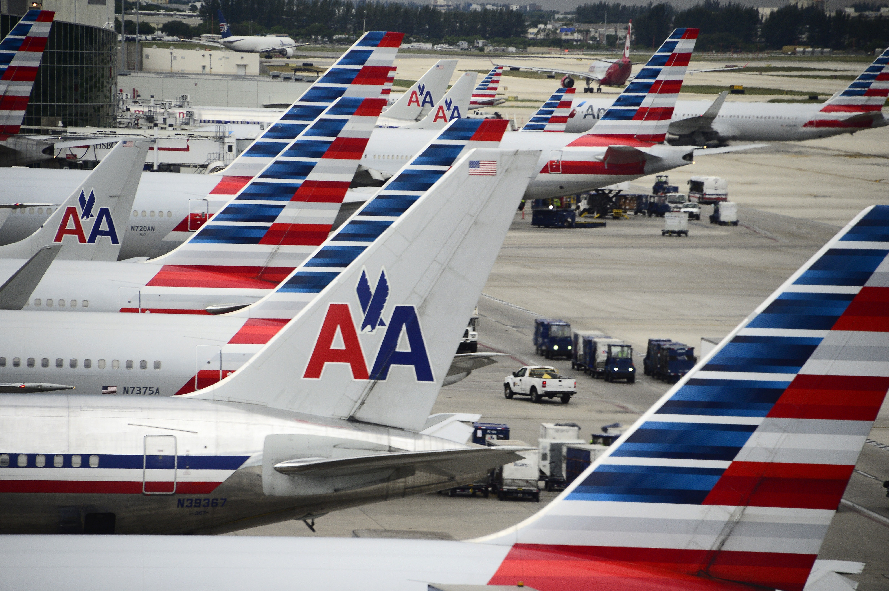
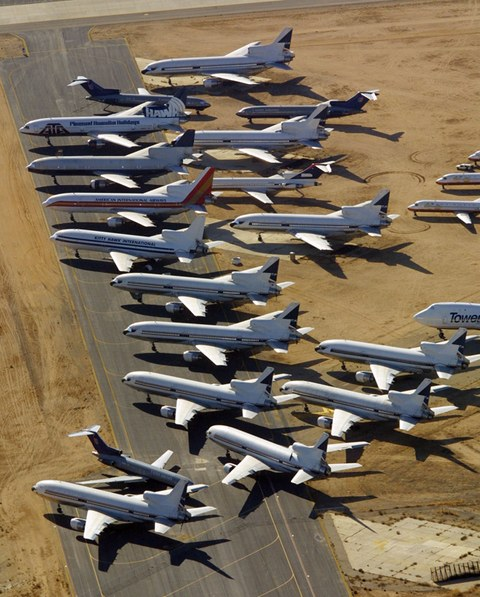

When is the best time to fly if you want to avoid flight delays?
When is the best time to fly if you want to avoid flight delays?As part of an assignment for Data and Programming for Policymakers, an introductory course in programming and data visualization at the Harvard Kennedy School, we were tasked with selecting a topic of interest, gathering and manipulating relevant datasets, and creating a website to present our findings by utilizing GitHub, Trello, and D3 visualization.
Our team selected airport data from three different datasets in order to present various insights about how factors such as departure airport, type of plane, date of flight, and carrier influence the likelihood of a flight delay from a US airport. Unless otherwise specified, we adopted the DOT convention of defining a delay as a delay in departure time of 15 minutes or more. Although we had data on many other variables including type of delay, we opted not to differentiate between the different types of delays (due to weather vs security, for example) and we did not incorporate data on early arrivals. Our project is intended to serve as a basic investigative tool for a consumer or researcher interested in exploring some additional considerations for flight selection beyond the more obvious decision motivating factores (i.e. price):
Does passenger traffic impact flight delays?
When is the best time to fly if you want to avoid flight delays?
What is the best flight to take from Boston to popular destinations?
Which types of planes fly between various routes?